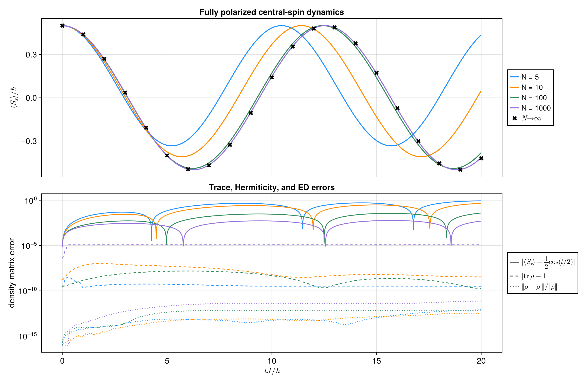

Central-spin dynamics using ACE
Can many weakly coupled bath spins produce a simple collective motion? We construct their influence with ACE and follow the transverse spin $\langle S_x(t)\rangle$. An exact finite-bath expression lets us distinguish physical finite-size effects from numerical approximation.
scripts/central_spin_ace.jl runs the $N=5,10,100,1000$ sweep, caches the process tensors, and generates the trajectory and diagnostic figure.
Model and physical question
We follow the fully polarised central-spin benchmark of Cygorek et al. (Nature Physics 18, 662–668, 2022). There are no free Hamiltonians: all motion comes from isotropic exchange with independent bath spins,
\[H=\frac{J}{N}\sum_{k=1}^{N}\mathbf S\cdot\mathbf s_k, \qquad H_S=H_B=0.\]
We use $\hbar=1$ and $J=1$. The central spin starts in $|+x\rangle$ and every bath spin in $|\uparrow_z\rangle$. The factor $1/N$ keeps the total coupling scale fixed as the bath grows. The polarised bath acts approximately as a field along $z$, around which the central spin precesses. Exchange also allows the central spin to flip while exciting the bath.
The cells below use $N=5$, $dt=0.2$, and 20 snapshots, ending at $t=3.8$. The companion figure uses $N=5,10,100,1000$, $dt=0.01$, $t=20$, cutoff $10^{-10}$, and maxdim=1024. These are separate calculations.
using Logging
using LinearAlgebra
using ITensors
using ITensors.Ops: Trotter
using ProcessTensors
N_bath = 5
J = 1.0
dt = 0.2
nsteps = 20
ace_cutoff = 1e-8
ace_maxdim = 3232Assemble and compress the bath
Each bath spin becomes a SpinMode. In its coupling OpSum, site 1 is the bath spin and site 2 is the central spin. Empty OpSums specify the vanishing free Hamiltonians; the nonzero coupling is supplied separately. We silence the constructors’ warnings about these intentionally empty Hamiltonians using the NullLogger.
system_sites = siteinds("S=1/2", 1)
system = with_logger(() -> spin_system(system_sites, OpSum()), NullLogger())
initial_density = to_dm(MPS(system_sites, ["+"]))
bath_sites = siteinds("S=1/2", N_bath)
bath_liouville_sites = liouv_sites(bath_sites)
coupling = OpSum()
coupling += J / N_bath, "Sx", 1, "Sx", 2
coupling += J / N_bath, "Sy", 1, "Sy", 2
coupling += J / N_bath, "Sz", 1, "Sz", 2
modes = SpinMode[]
for k in 1:N_bath
ρk = to_dm(MPS([bath_sites[k]], ["Up"]))
ρk_l = to_liouville(ρk; sites=[bath_liouville_sites[k]])
mode = with_logger(() -> spin_mode([bath_liouville_sites[k]], OpSum(), ρk_l;
coupling=copy(coupling)), NullLogger())
push!(modes, mode)
end
bath = spin_bath(modes)ProcessTensors.SpinBath
modes: 5
space: Liouville
site dims: 4, 4, 4, 4, 4
bath Liouville dimension: 1024
mode summary:
[1] SpinMode(dim=4, H_terms=0, coupling_terms=3)
[2] SpinMode(dim=4, H_terms=0, coupling_terms=3)
[3] SpinMode(dim=4, H_terms=0, coupling_terms=3)
[4] SpinMode(dim=4, H_terms=0, coupling_terms=3)
[5] SpinMode(dim=4, H_terms=0, coupling_terms=3)
ACE combines the mode influences and compresses their temporal bonds. This avoids explicitly storing a joint bath density operator with $4^N$ components. The retained bond dimensions depend on the process and truncation.
process_tensor = build_process_tensor(
system; environment=bath,
method=ACE(cutoff=ace_cutoff, maxdim=ace_maxdim, compression=:zipup_cpp),
dt=dt, nsteps=nsteps,
sys_alg=Trotter{2}(), combine_alg=Trotter{2}(),
)20-step ProcessTensor{SpinSystem, SpinBath} | dt=0.2 | t_final=4.0 | maxlinkdim=13
system: SpinSystem(nsites=1, dissipative=false)
environment: SpinBath(nmodes=5, D_bath=1024, coupling=true)
core: MPO{Liouville}(length=20, linkdims=[4, 9, 13, …, 9])
The free-system Hamiltonian vanishes, so its half-steps are identities. Different mode interactions still share the central spin and generally do not commute. Symmetric mode combination therefore retains a timestep error, in addition to ACE truncation. A bond below maxdim only tells us that the cap was not reached; it does not establish convergence.
Read the central-spin trajectory
evolve contracts the completed process with the initial preparation. We convert its one-spin output to a $2\times2$ matrix for compact diagnostics. The expectation is trace-normalised, while raw trace drift is reported separately so that normalisation cannot conceal it.
trajectory = evolve(process_tensor, initial_density)
function one_spin_matrix(ρ)
tensor = foldl(*, ρ)
site = only(filter(i -> plev(i) == 0 && hastags(i, "Site"), inds(tensor)))
return ComplexF64.(Array(tensor, prime(site), site))
end
states = one_spin_matrix.(trajectory.states_hilbert)
traces = tr.(states)
@assert all(z -> isfinite(z) && abs(z) > 1e-12, traces)
Sx = ComplexF64[0 1; 1 0] / 2
spin_x = [real(tr(Sx * ρ) / z) for (ρ, z) in zip(states, traces)]
trace_error = maximum(abs.(traces .- 1))
hermiticity_error = maximum(norm(ρ - ρ') / norm(ρ) for ρ in states)
println((final_time=last(trajectory.times), initial_sx=first(spin_x),
final_sx=last(spin_x), max_trace_error=trace_error,
max_hermiticity_error=hermiticity_error,
max_pt_bond=maxlinkdim(process_tensor)))
@assert all(isfinite, spin_x)
@assert maximum(abs, spin_x) <= 0.5 + 1e-3
@assert trace_error < 1e-3(final_time = 3.8000000000000003, initial_sx = 0.4970039976222543, final_sx = -0.22386888259922594, max_trace_error = 2.859831704782323e-9, max_hermiticity_error = 2.3638491880323642e-14, max_pt_bond = 13)
Interpret the oscillations
Uniform coupling preserves the bath's collective-spin sector $j=N/2$. Starting with a fully polarised bath restricts the evolution to the all-up state and a two-state block containing one spin flip. Their energy differences give the exact finite-$N$ transverse expectation
\[\langle S_x(t)\rangle_N =\frac{1+N\cos[J(N+1)t/(2N)]}{2(N+1)} \;\longrightarrow\;\frac12\cos(Jt/2).\]
This expression is specific to uniform coupling and the stated initial state; it is a reference for ACE, not an ingredient of its construction.
exact_sx = (1 .+ N_bath .* cos.(J * (N_bath + 1) .* trajectory.times ./
(2N_bath))) ./ (2(N_bath + 1))
large_bath_sx = 0.5 .* cos.(J .* trajectory.times ./ 2)
println((max_error_vs_exact_finite_N=maximum(abs.(spin_x .- exact_sx)),
max_deviation_from_large_N=maximum(abs.(spin_x .- large_bath_sx))))(max_error_vs_exact_finite_N = 0.04986310163361006, max_deviation_from_large_N = 0.09626903561194214)

In the companion figure, the $N=5$ and $N=10$ curves reach their first minimum before the large-bath reference and do not reach $-1/2$. The formula explains both features. The oscillation frequency and the value of that minimum are
\[\omega_N=\frac{J(N+1)}{2N}, \qquad \min_t\langle S_x(t)\rangle_N=\frac{1-N}{2(N+1)}.\]
For $N=5$ this minimum is $-1/3$; for $N=10$ it is $-9/22$. The $N=100$ and $N=1000$ curves approach the limiting cosine. Thus these offsets and phase shifts are expected finite-bath physics.
The black crosses show the large-bath limit. In the lower panel, the solid curves are the absolute error against the exact finite-$N$ expression. Trace drift and the relative Hermiticity defect show different properties of the reconstructed density operator. The error of the observable is compared against the analytical expectation provided above.
At fixed $N$, reducing dt and tightening compression should improve agreement with the finite-$N$ reference. It should not eliminate physical differences from the limiting cosine. Trace and Hermiticity checks are useful but do not certify positivity or accuracy of the whole process.
These edits test whether the offset from the large-bath cosine is finite-bath physics, and whether the remaining disagreement with the finite-$N$ formula comes from the timestep or from ACE truncation. A new central-spin preparation can reuse the stored process tensor. A new bath size, coupling, or dt is built into the cores and needs a new one.
- Increase $N$ while keeping each coupling equal to $J/N$. Compare the first minimum of $\langle S_x(t)\rangle$ with the time $t=\pi/\omega_N$ and the depth given above.
- Halve
dtand setnsteps = 2(nsteps - 1) + 1, so the final time stays the same. If the second-order splitting dominates, the error against the finite-$N$ formula should fall by about a factor of four. A plateau points to the ACE cutoff andmaxdimnext. - Change one bath coupling, or prepare the central spin in a different direction. The finite-$N$ formula above applies only to uniform coupling and $|+x\rangle$. The changed preparation can reuse this process tensor.